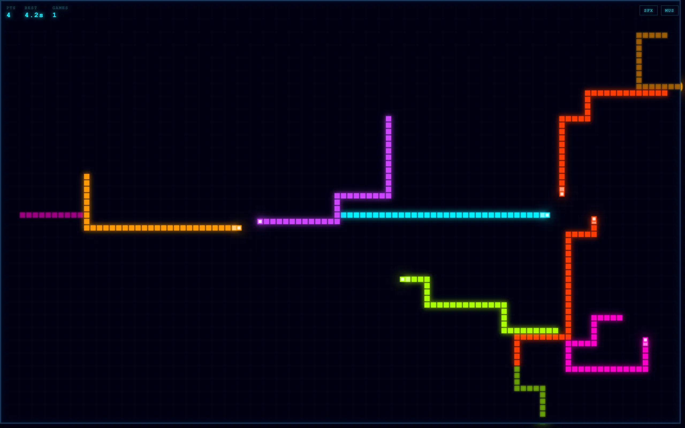
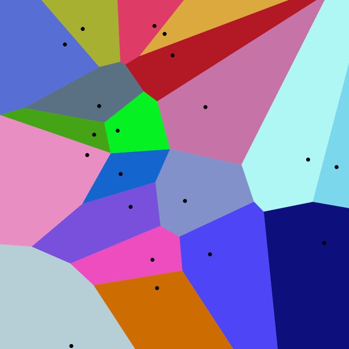
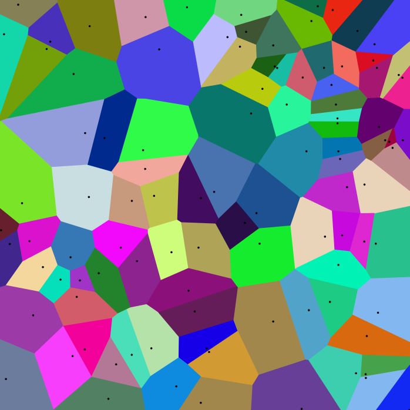

Two lightcycles race across a grid. Each leaves a wall behind it. Hit any wall and you die. The game is from the 1982 Tron film, and it's been reimplemented countless times, but I wanted to build one with a competent AI opponent and a speed mechanic that rewards risky play.

{kind=link}
Wall riding
The speed boost is the most important design decision. When your cycle is close to a wall, it accelerates. The closer you ride, the faster you go. This creates a risk-reward loop: safe play in open space is slow, while threading the needle along existing walls lets you cover ground faster and claim more territory. The cycle pulses visually when boosted so you can feel the speed without checking a number.
The boost applies to the AI too. It uses the same physics. When the bot rides its own walls or yours, it speeds up. This means the AI can sometimes outrun you in tight corridors, which keeps matches tense even when you think you have a spatial advantage.
Voronoi territory
The AI decides where to go by computing a Voronoi partition of the remaining open space. Given a set of sites \(P = \{p_1, p_2, \ldots, p_n\}\) in the plane, the Voronoi diagram partitions the space into cells, one per site, such that every point in a cell is closer to its site than to any other. Formally, the Voronoi cell for site \(p_i\) is:
\[V_i = \{x : d(x, p_i) \leq d(x, p_j) \text{ for all } j \neq i\}\]In continuous geometry with Euclidean distance, this produces the familiar polygon tessellation. In a Tron grid, the sites are the two players' current positions and the distance function \(d\) is not Euclidean but geodesic: the shortest path length through unoccupied cells, respecting walls as impassable obstacles. This turns each Voronoi cell into the set of grid squares that a given player can reach before the other.
Conceptually, the AI asks: "if both players expanded outward from their current positions as fast as possible, how much space would each one claim?" The player who can reach more cells owns more territory. Let \(A_i\) denote the area (cell count) of \(V_i\). The bot evaluates each candidate direction \(m \in \{\text{up}, \text{down}, \text{left}, \text{right}\}\) by simulating one step in that direction and computing the resulting territory split. Its decision rule is a greedy maximization of reachable area:
\[m^* = \arg\max_{m} \; A_{\text{bot}}(m)\]where \(A_{\text{bot}}(m)\) is the bot's Voronoi cell area after taking move \(m\).
This is a well-known heuristic in lightcycle AI. It works because the game is fundamentally about space control. A player who gets trapped in a smaller region than their opponent will eventually run out of room. The Voronoi approach approximates an optimal partition without needing to search deep into the game tree.
Computing a true Voronoi diagram in continuous space is an \(O(n \log n)\) operation, classically solved by Fortune's sweep-line algorithm. On a discrete grid with obstacles, the equivalent is a BFS flood fill: both players' positions are enqueued simultaneously, and the search expands outward one cell at a time, marking each cell for whichever player reaches it first. This is effectively a discrete geodesic Voronoi computation. It runs in \(O(W \times H)\) time for a grid of width \(W\) and height \(H\), which is fast enough to compute every frame without any perceptible lag.
The bot doesn't look ahead multiple turns. It's purely reactive, one step of lookahead with the Voronoi heuristic. Despite this, it plays well. It rarely traps itself, it chases you into corners when it has the advantage, and it knows when to sacrifice a corridor to secure a larger region.

{kind=link}
Persistence and respawning
When the bot dies, its trail walls stay on the board for two seconds before fading. Then it respawns. This means the arena accumulates debris over time. Old walls from dead bots become new obstacles, making the playing field progressively more constrained. Your score accumulates across games based on survival time, so there's an incentive to keep going even after a loss.
Implementation
The game is written in TypeScript and built with Vite. The codebase is organized into modules for the engine, entities, rendering, and game systems. There's a proper test suite using Vitest. Audio (both sound effects and music) uses the Web Audio API, with toggle buttons in the corner for people who prefer silence.
The visual style leans into the neon-on-black aesthetic of the source material. Cyan glows against a near-black background. The HUD uses monospace type with text-shadow for a CRT feel. Points, best time, and game count sit in the top-left corner. Controls are WASD or arrow keys on desktop, swipe on mobile. The whole thing runs on Canvas 2D at a smooth framerate.